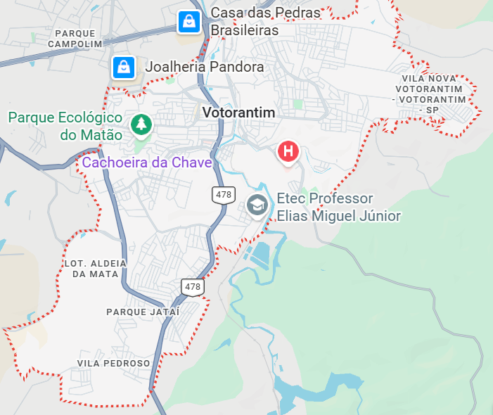

Monitorização Ambiental Direta.
Uma plataforma técnica para a gestão de recursos arbóreos e denúncias ambientais. Transparência total para o cidadão.
Uma plataforma técnica para a gestão de recursos arbóreos e denúncias ambientais. Transparência total para o cidadão.
Poda
Replantio
Ocorrências

Concluídos
Em andamento